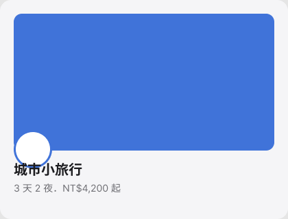
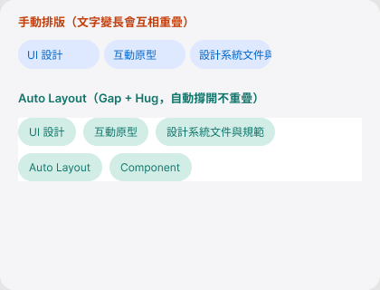
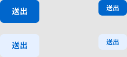
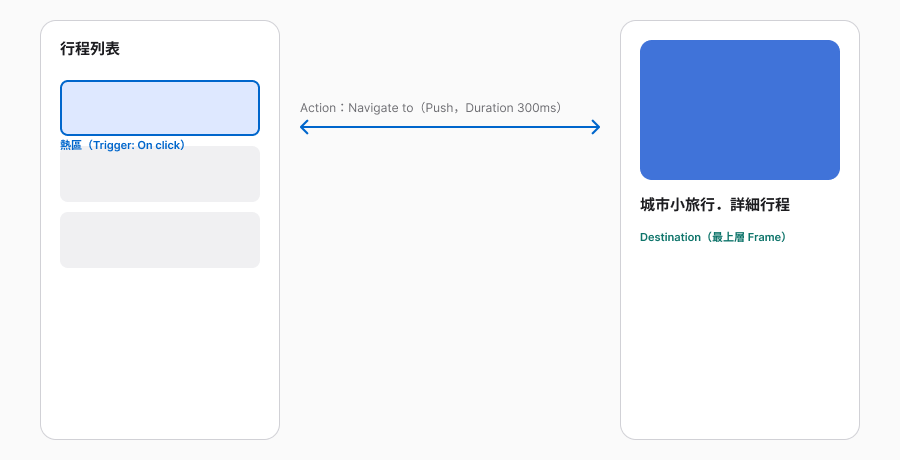

今天不做研究，做工具。把 Unit 01–02 想清楚的東西，變成一份能在 Figma 裡打開、點得動的檔案。
Agenda
Shape Tools
| 工具 | 快捷鍵 | 用途 |
|---|---|---|
| Rectangle | R | 矩形、正方形；圓角可直接拖曳控制點調整 |
| Line | L | 任意方向的直線；可調描邊粗細與虛線 |
| Arrow | Shift + L | 單向或雙向箭頭 |
| Ellipse | O | 橢圓、正圓 |
| Polygon / Star | — | 邊數／角數可在右側面板的 Count 調整 |
Layers

這張卡片有 4 個圖層：照片矩形在最下面，頭像橢圓疊在照片上，標題與副標文字疊在最上面。
Frame
Why Auto Layout
Toggle On
Before / After

上：手動排版，固定間距，文字一長就疊在一起。下：Auto Layout 的 Gap + Hug，每個標籤依內容自動撐開，超出寬度自動換行（Wrap）。
Key Properties
| 屬性 | 在調什麼 |
|---|---|
| Padding | Frame 邊界與內容之間的空白 |
| Gap | 物件與物件的距離，可固定值，也可用 Between／Around／Evenly |
| Alignment | 物件在 Frame 裡怎麼對齊 |
| Resizing | Hug contents（依內容縮到最小）／Fill container（撐滿父層）／Fixed（固定尺寸） |
Component & Instance
| 可以改 | 不能改 | |
|---|---|---|
| Instance | 文字、填色、描邊、效果——調整成符合當下情境 | 圖層堆疊順序（z-index）、圖層內的位置 |
Variants

選取多個 Component → 右側面板點 Combine as variants，Figma 會收進同一個 Component Set。屬性預設叫 Variant、Property 2……要自己重新命名成 Type、Size 這種看得懂的名字。
Naming
Button/Primary/Large/Default/False——Component Set 是 Button，底下 Type／Size／State／Icon 各自獨立。Prototype
Trigger · Action · Destination

Trigger（觸發條件，如 On click）→ Action（動作，如 Navigate to）→ Destination（目的地，多數情況要是最上層 Frame）。
Connect
| 步驟 | 做法 |
|---|---|
| 1 | 切到右側 Prototype 分頁，選熱區物件 |
| 2 | 拖曳物件邊緣的「＋」到目標 Frame，或點 Interactions 區塊的 Add |
| 3 | 設定 Trigger／Action／Destination |
| 4 | 選動畫：Push／Slide／Dissolve，或用 Smart Animate 自動轉場同名圖層 |
Part 3
Common Blockers
| 卡住的地方 | 原因 | 怎麼解 |
|---|---|---|
| Shift + A 沒反應 | 選到的是 Group 不是圖層本身 | 先確認選取範圍，或直接右鍵選 Add auto layout |
| 物件撐不滿寬度 | Resizing 還是 Fixed，不是 Fill container | 選取子物件，右側面板把 Resizing 改成 Fill |
| Combine as variants 按了沒用 | 選到的物件不是 Component（還是一般 Frame） | 先把每個版本各自變成 Component（右鍵 Create component），再合併 |
| Prototype 連接線拉不出去 | 目標不是最上層 Frame，或熱區選錯圖層 | 確認目的地是獨立的頂層 Frame，熱區選外層可點的容器 |
Homework Preview
Resources
resources/。Wrap Up